Clínica Montesur
Investigación y diseño UX para optimizar el flujo de agendamiento de citas
Resultados del proyecto
Clínica Montesur es una institución de salud privada especializada en atención materna y medicina familiar en Lima, reconocida por la calidad de su cuerpo médico e infraestructura. Cuenta con presencia digital a través de su sitio web, pero la experiencia actual no responde a los comportamientos ni expectativas reales de sus usuarios.

Mi Rol
Diseñador UX/UI — investigación, definición del problema, diseño de flujo, UI y handoff.
Equipo
Equipo de 2 diseñadores UX/UI
Cliente
Clínica Montesur (institución de salud privada, Lima)
Timeline
8 semanas · diseño UX/UI end-to-end, entrega en Figma
El Problema
El problema central está en el agendamiento de citas. El flujo no es evidente: la navegación no comunica con claridad los pasos a seguir, y el menú principal no logra orientar al usuario. El resultado es frustración los usuarios migran directamente la WhatsApp, llamadas o formularios para resolver algo que debería poder hacerse de forma autónoma.
Este comportamiento no es un hábito: es una señal de quiebre en la experiencia. La sobrecarga en el canal de contacto no solo genera fricción para el usuario, sino que recae sobre el personal interno, que gestiona manualmente solicitudes que el sistema debería resolver — experiencia degradada hacia afuera, ineficiencia operativa hacia adentro.
Este problema se identificó en la sesión de validación con el stakeholder de Marketing y se confirmó con las entrevistas a pacientes. La oportunidad de diseño: rediseñar el flujo de agendamiento para que sea comprensible, confiable y accionable, tanto para el usuario como para el equipo interno.
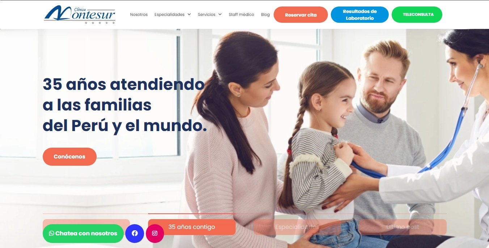
La home cuenta con tres CTAs de colores distintos compitiendo al mismo tiempo — reservar cita, resultados de laboratorio, teleconsulta — sin jerarquía clara ni un hilo conducción que guiara al usuario. El hero decía "35 años atendiendo a las familias del Perú y el mundo" pero no responde la pregunta más urgente del usuario que llega por primera vez.
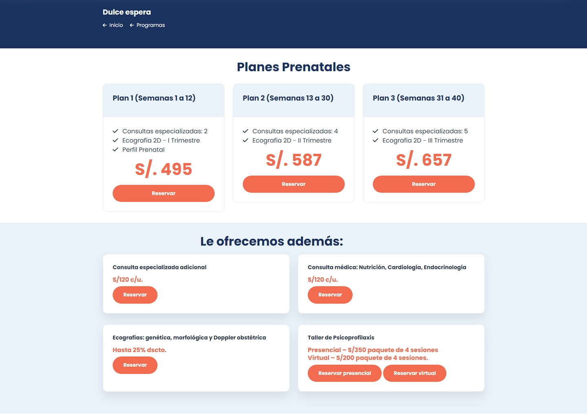
- Jerarquía visual rota: Los 3 planes prenatales y las 4 ecografías compiten visualmente sin orden de importancia.
- Carga cognitiva alta: El usuario debe procesar 2 sistemas de precio distintos sin un modelo mental claro.
- Sección "además" fragmenta la atención justo cuando el usuario intenta decidir
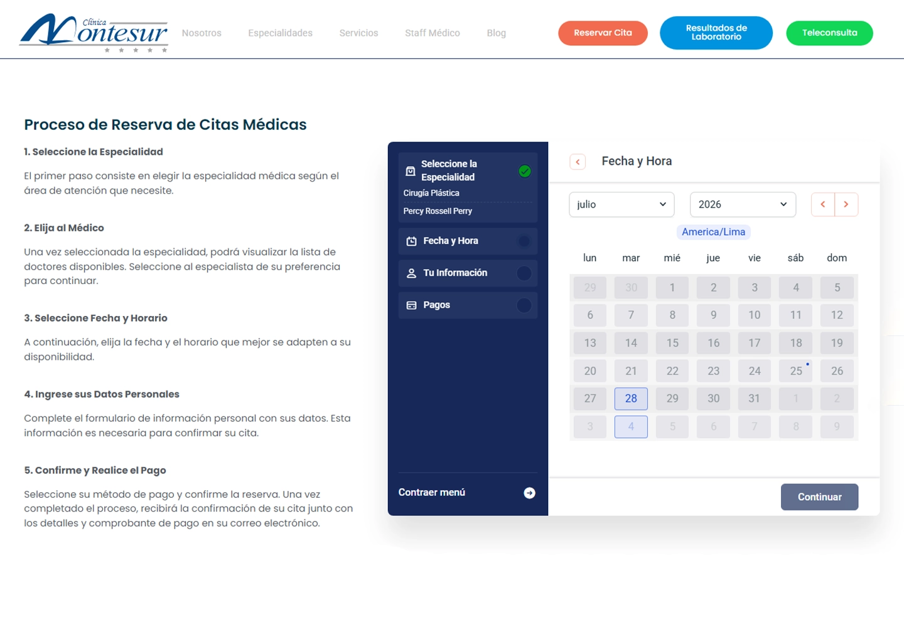
La plataforma CMR para "agendar cita" es usado de manera manual de una persona encargada para gestionar las citas solicitadas de los pacientes.
Resumen del problema:
La navegación no comunicaba el flujo de agendamiento con claridad, y el sitio fue construido desde la lógica interna del negocio, no desde el comportamiento real de los usuarios el resultado era dependencia total de WhatsApp para una tarea que debía ser autónoma.
Componentes del problema:
Los usuarios llegan con la intención clara (agendar una cita) y no encuentran el flujo para hacerlo — el botón principal deriva a WhatsApp, los perfiles médicos no tienen suficiente información para elegir con confianza, y los programas de maternidad, eje de la propuesta de valor de la clínica, no son visibles desde la navegación principal. A nivel interno, el agendamiento es completamente manual, gestionado por un único número de WhatsApp sin sincronización con horarios reales ni confirmaciones automáticas. El problema central no es que los usuarios prefieran WhatsApp — es que la web no ofrece ninguna alternativa real.
- ✦ El botón principal de "agendar" derivaba a WhatsApp, no a un flujo propio.
- ✦ Los perfiles médicos no tenían suficiente información para elegir con confianza.
- ✦ Los programas de Maternidad — eje de la propuesta de valor de la clínica — no eran visibles desde la navegación principal.
- ✦ El agendamiento era 100% manual, sin sincronización de horarios ni confirmaciones automáticas.
Impacto por nivel:
-
✦ Usuario:
Confusión y abandono en el momento de mayor intención; ansiedad por falta de confirmación automática, al no responder lo que buscan especialmente en pacientes y pacientes gestantes. -
✦ Negocio:
Cada tarea no completada en la web se convierte en carga manual para el equipo interno; baja escalabilidad mientras el agendamiento dependa de personas y no de un sistema. -
✦ Marca:
Al hacer el benchmark comparativo con otras Clínicas, los usuarios percibieron a la web acutal como funcionalmente inferior, aunque su contenido informativo les pareció más claro.
Investigación
A través de entrevistas con el stakeholder de Marketing y con pacientes, más una auditoría del flujo existente, identificamos las brechas que mantenían el problema estancado.
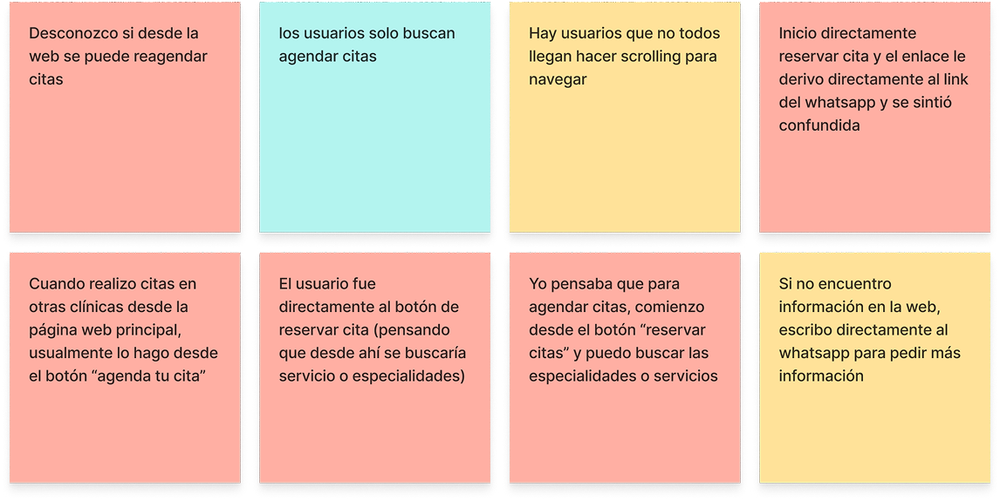
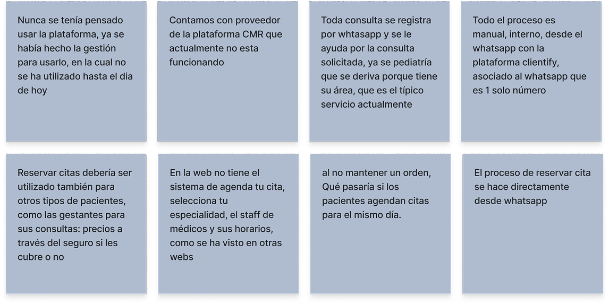
Qué exploré
- ✦ Cómo los usuarios esperan agendar una cita hoy, basados en su experiencia con otras clínicas.
- ✦ Qué rol juega la confianza en el médico antes de agendar.
- ✦ Cómo interactúan los usuarios con el scroll y la navegación.
- ✦ Por qué los usuarios prefieren WhatsApp.
Qué encontré
- ✦ Cómo los usuarios esperan agendar una cita hoy, basados en su experiencia con otras clínicas.
- ✦ Qué rol juega la confianza en el médico antes de agendar.
- ✦ Cómo interactúan los usuarios con el scroll y la navegación.
- ✦ Por qué los usuarios prefieren WhatsApp.
Benchmark competitivo
Comparamos contra San Felipe, Anglo Americana, Ricardo Palma, Sanna e Internacional.
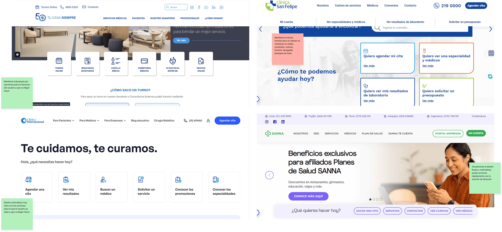
Dónde funcionaron (competencia)
Clínica Internacional — agendamiento en 2 pasos
Sanna — buen performance técnico y contraste de accesibilidad (WCAG) — agendamiento en 2 pasos
Competencia en general — navegación dividida en 2 secciones (principal + funciones clave: agendar, buscar doctor, buscar especialidad)
Dónde fallaba Montesur en comparación
No tenía un flujo propio de agendamiento
No había sido auditado en accesibilidad y agendamiento de citas
La información no estaba jerarquizada, especialmente los programas de maternidad
Conflicto de diseño real
- I1: El modelo mental de agendamiento ya existe en la cabeza del usuario (como Anglo Americana, Internacional, apps como Rimac) Montesur no lo tiene esa función.
- I2: La ausencia de confirmación automática genera ansiedad, no solo incomodidad, en pacientes de maternidad y pediatría.
- I3: Para una clínica con foco en maternidad, la identidad no se lee en la navegación — los programas prenatales requieren scroll profundo para encontrarlo.
User persona


User Journey Map
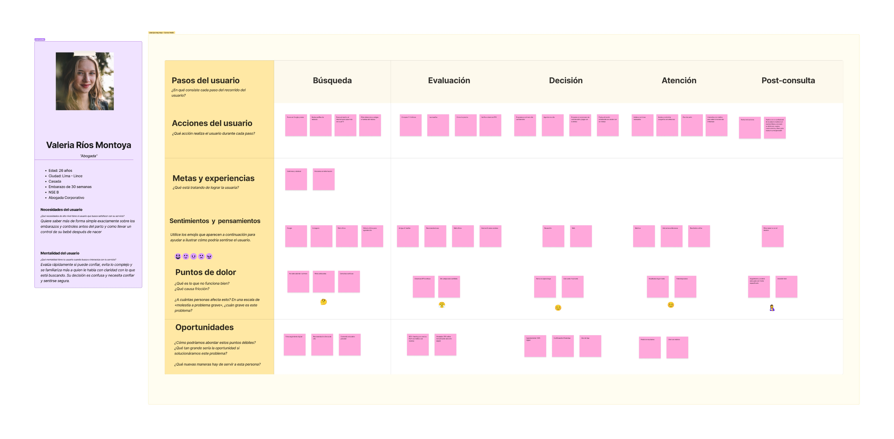
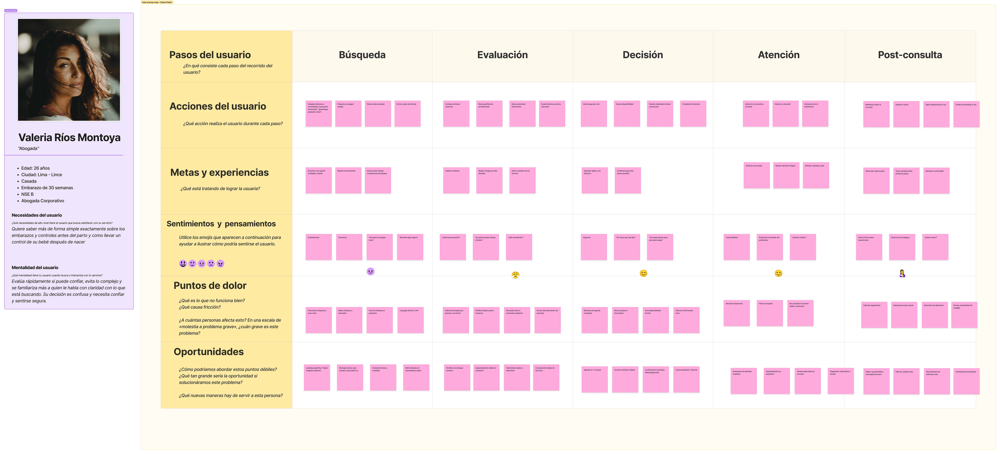
Task flow
Integrando un plugin de CRM (Clientify) para "agendamiento", se definieron 3 flujos:
- ✦ El usuario llega a la web, da clic en "Agendar cita" y accede directamente al CMR de agendamiento. codigo --- claro: 4430090426
- ✦ El usuario busca una especialidad para atenderse, selecciona un médico y "Agenda su cita".
- ✦ El usuario busca un doctor directo por recomendación o búsqueda frecuente, selecciona y agenda su cita.
Flujo de usuario
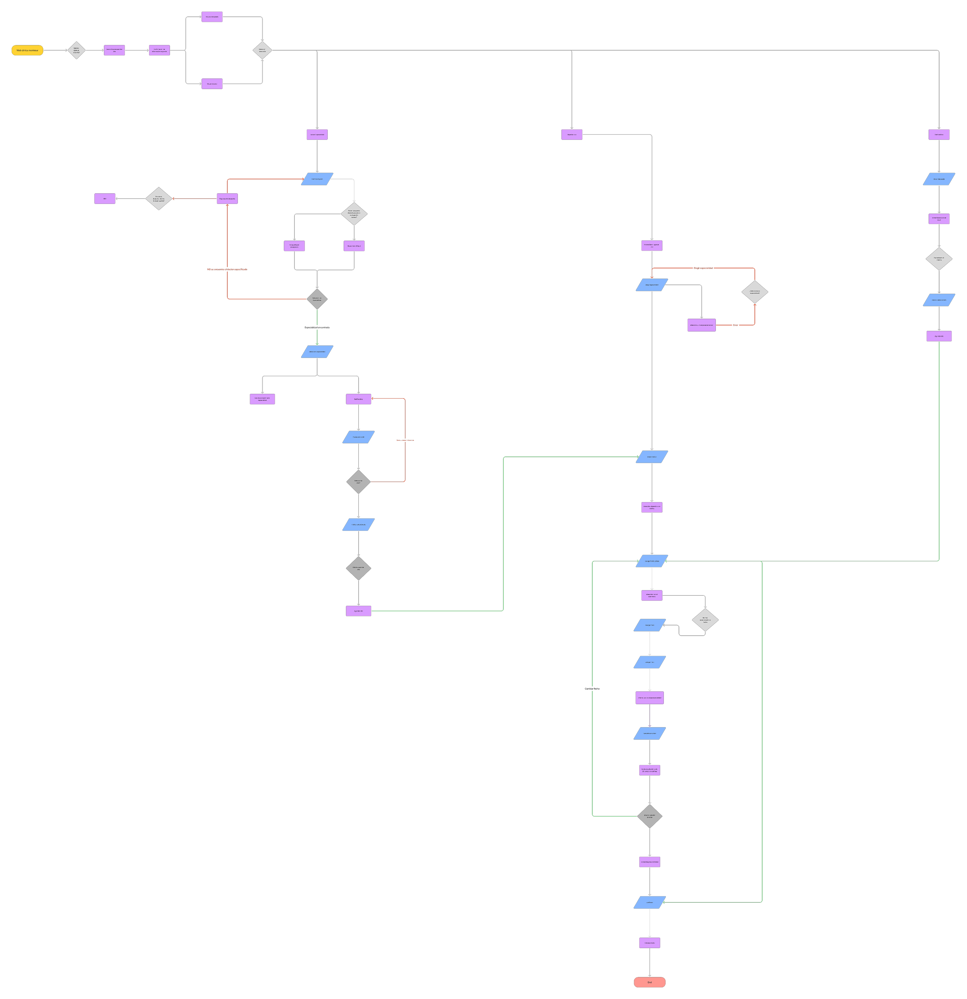
Mapa de Sitio
En el site map restructuramos la navegación fluida y limpia desde la barra de navegación, para agendar cita, pedir consultas con el formularios para cada especialidad y servicios

Definición
HMW — ¿Cómo podríamos?
➔ ¿Cómo podríamos hacer que los pacientes identifiquen rápidamente cómo agendar una cita desde la web?
➔ ¿Cómo podríamos reducir la dependencia de WhatsApp como canal por defecto?
➔ ¿Cómo podríamos hacer visibles los programas clave, como maternidad, dentro de la navegación principal?
➔ ¿Cómo podríamos guiar al usuario paso a paso durante el agendamiento, sin fricción?
Mind-map


Wireframes
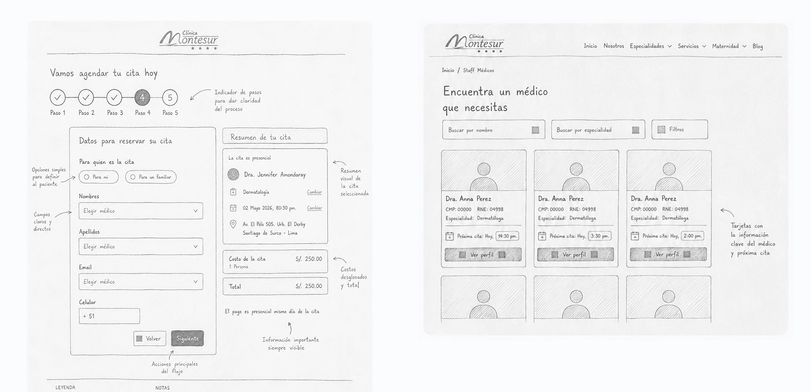
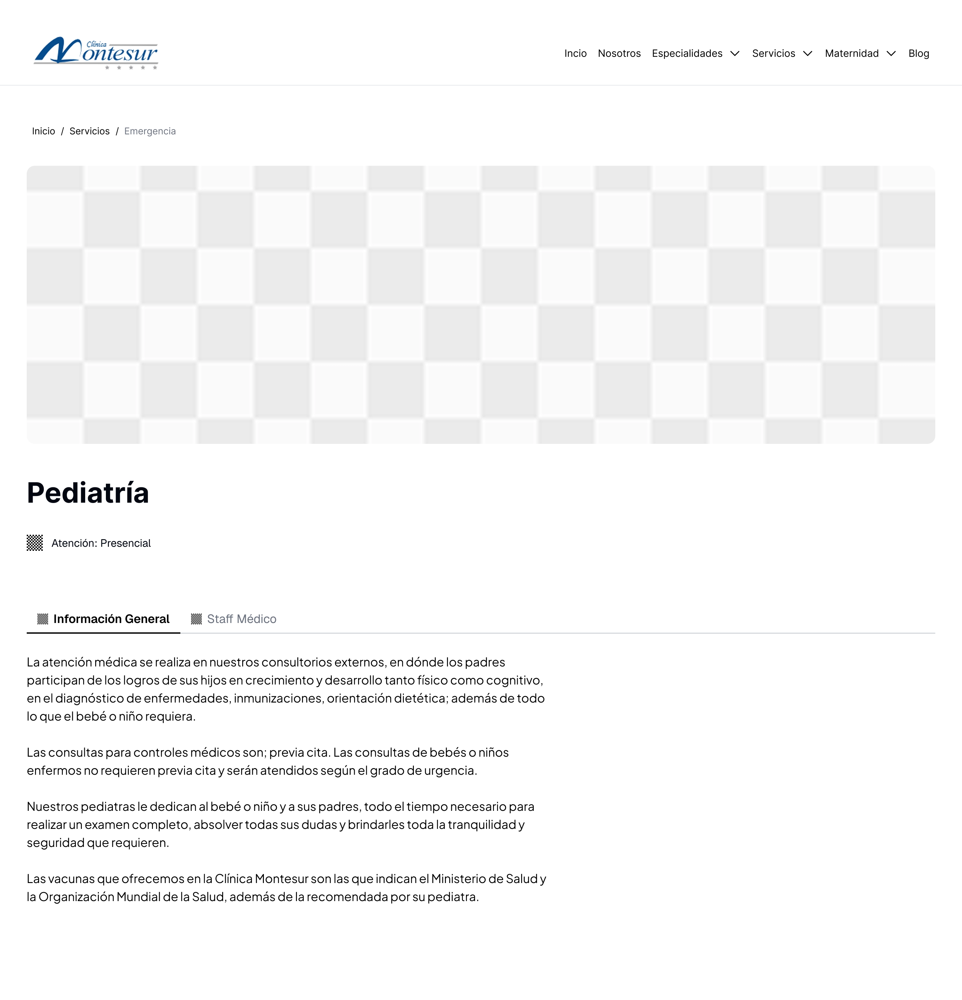
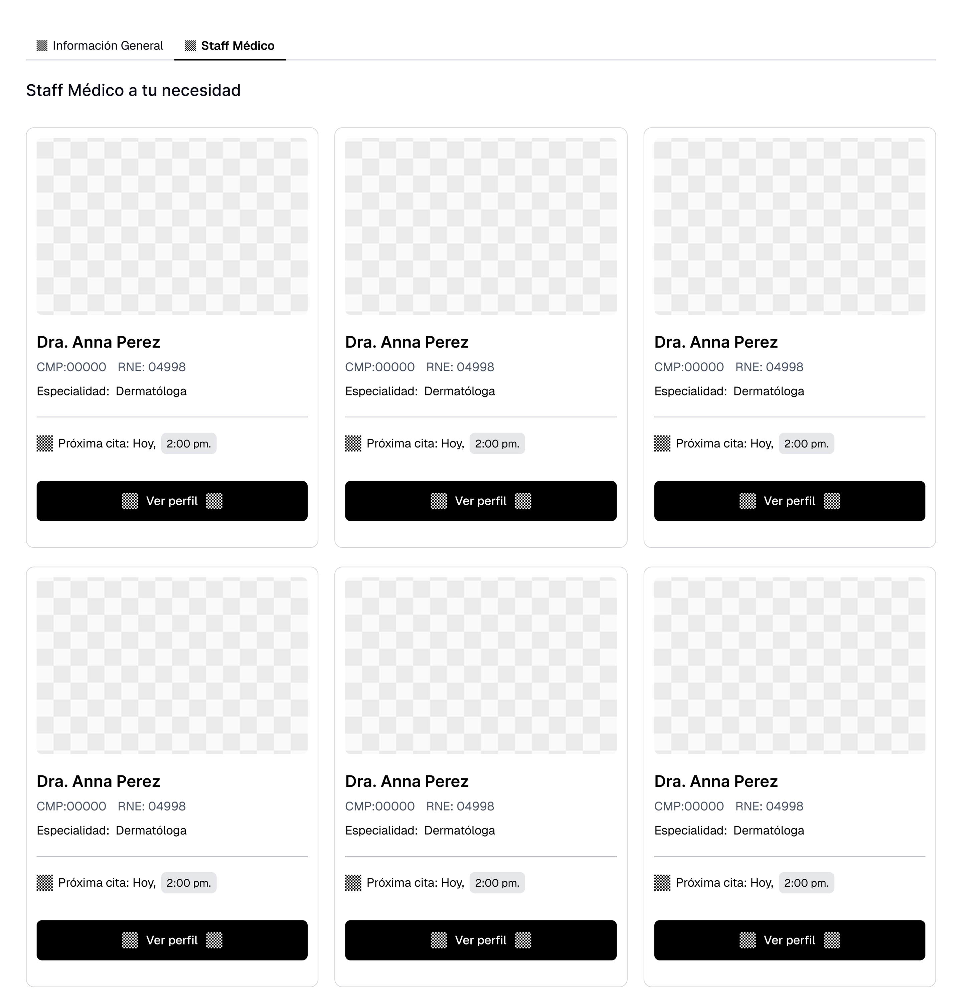
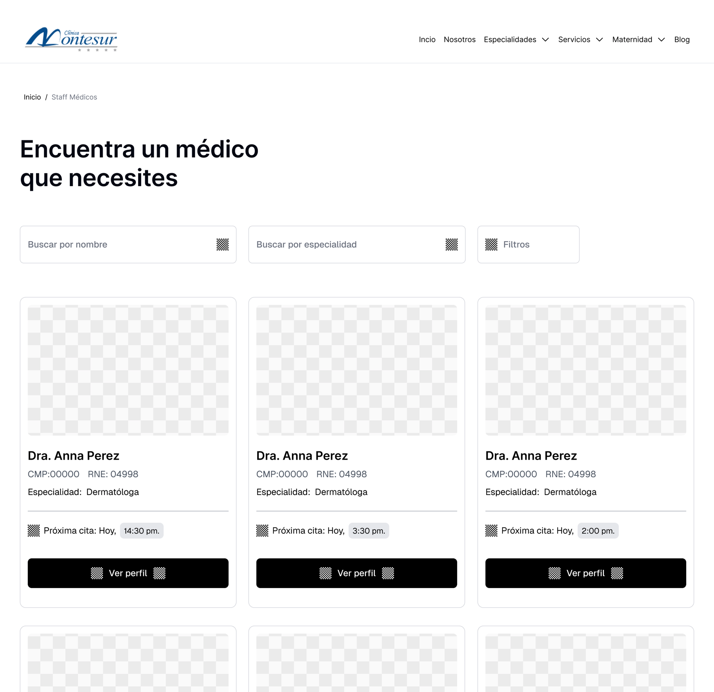
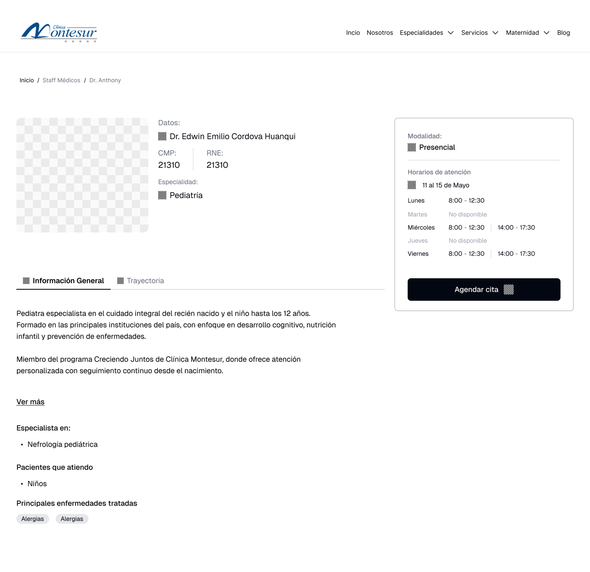
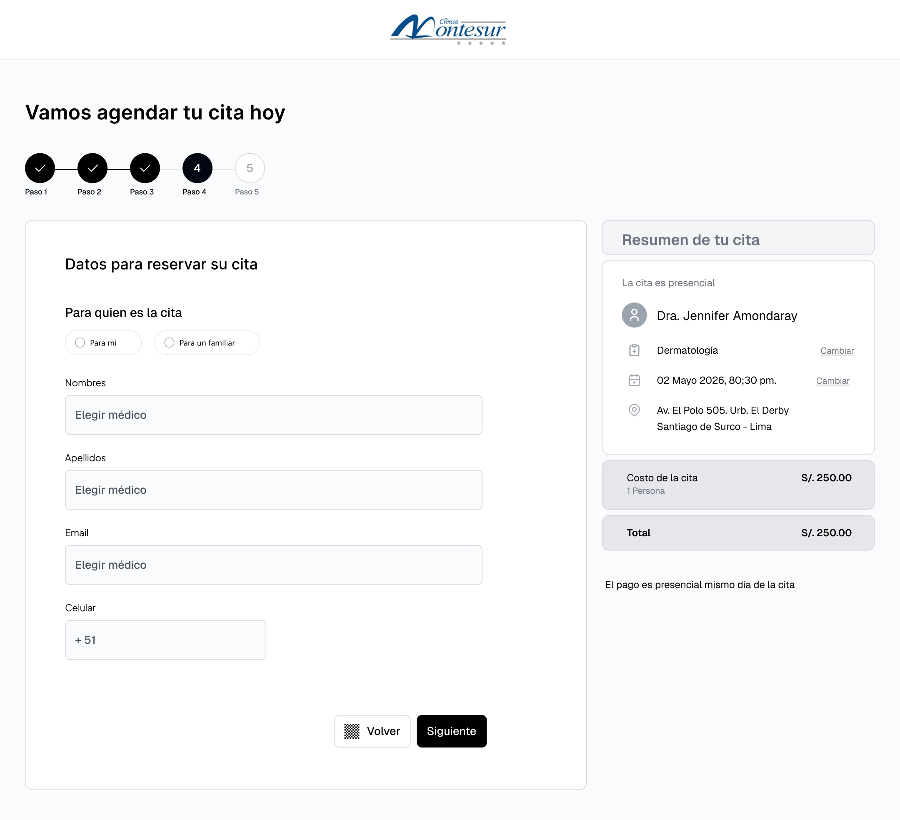
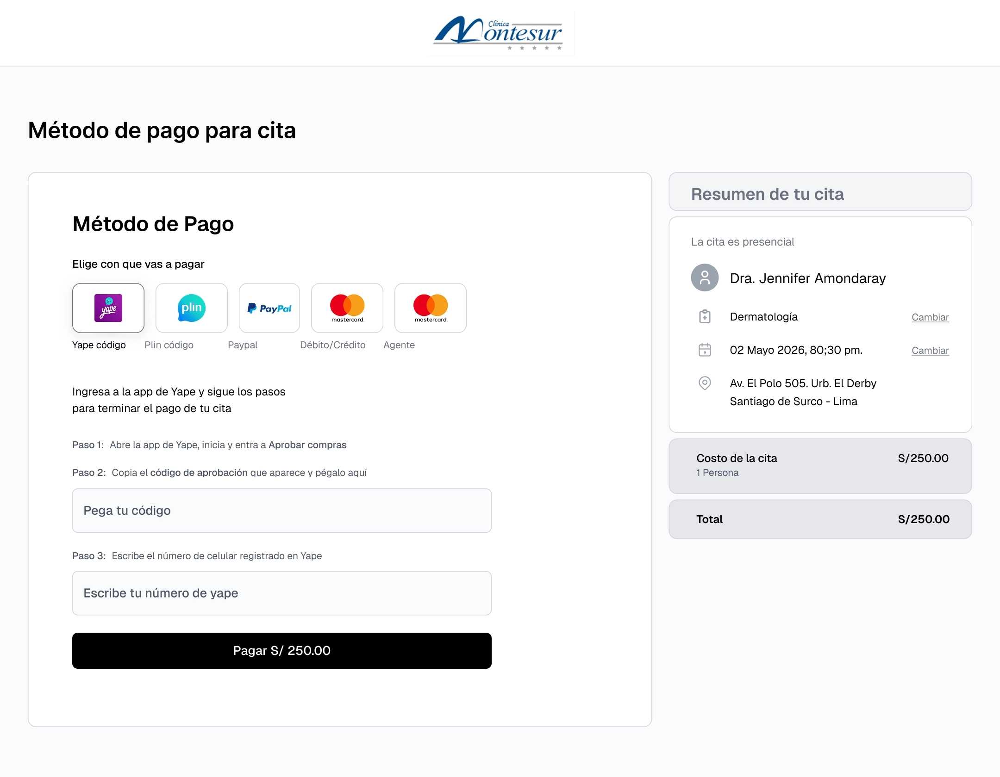
Solución
Decisiones clave de diseño
- ✦ Qué encontramos: Durante la investigación identificamos un patrón común entre competidores — navegación dividida en 2 secciones (navegación principal + sección de iteración con funciones clave como agendar cita, buscar doctor, buscar especialidad). El problema en la web actual no solo era visual, sino de conexión: los canales de contacto y de agendamiento no estaban integrados, la información no estaba jerarquizada (especialmente los programas de maternidad), y faltaban formularios específicos por servicio.
- ✦ Qué resolvimos: Integramos todos los canales de agendamiento con la plataforma CRM (plugin Clientify) para eliminar fricciones y distracciones en el flujo. Aplicamos jerarquía visual (patrón F, jerarquía tipográfica, separación entre secciones) y agregamos formularios específicos por servicio de consulta.
01 — Como paciente, quiero agendar una cita directamente desde la web, para no depender de WhatsApp ni de tiempos de respuesta manuales
Antes: el botón principal derivaba a WhatsApp. Después: integración de un plugin de CRM (Clientify) directamente en el flujo de "Agendar cita", con 3 caminos: acceso directo, por especialidad, o por búsqueda de médico específico.

02 — Como paciente, quiero agendar cita de manera instantáneo y sin fricciones.
Antes: perfiles médicos con información insuficiente y buscador limitado. Después: perfiles de doctor enriquecidos, accesibles desde Staff Médico y desde búsqueda por especialidad.

03 — Como paciente, quiero encontrar y confiar en un médico antes de agendar, para decidir con seguridad.
Antes: el botón principal derivaba a WhatsApp. Después: integración de un plugin de CRM (Clientify) directamente en el flujo de "Agendar cita", con 3 caminos: acceso directo, por especialidad, o por búsqueda de médico específico.

04 — Como paciente interesada en maternidad, quiero encontrar el programa sin tener que hacer scroll profundo, para sentir que la clínica realmente se especializa en esto.
Antes: programas de maternidad enterrados en la arquitectura. Después: jerarquía visual rediseñada en Home (headline 20px→24px, mayor contraste) y navegación directa a Maternidad desde el menú principal.

Validación
4 usuarios (3 pacientes reales de Montesur + 1 participante externo sin vínculo previo con la clínica) · pruebas moderadas · 15-20 min · abril 2026 · rango de edad estimado, no declarado por los participantes.
Dónde funcionaron (competencia)
Agendar cita instantánea
Buscar médico y agendar
Buscar especialidad y agendar
Éxito
4 / 4
4 / 4
4 / 4*
Errores críticos
0
0
0
2 participantes necesitaron orientación puntual; ambos completaron la tarea.
Los hallazgos son de severidad media y baja, concentrados en la claridad de los elementos interactivos (T1) y el flujo de navegación por especialidades (T3). Ningún hallazgo bloqueó el objetivo principal del usuario: agendar una cita.
- Mejoras implementadas: botones internos Volver/Siguiente en Especialidades; jerarquía visual del Home; eliminación del botón redundante "Ver perfil" en Agendar cita.
- Segunda ronda: 2 participantes adicionales confirmaron las 3 mejoras — sin hallazgos estructurales nuevos, solo ajustes de refuerzo de copy y peso visual.
Impacto
El testeo confirmó que el flujo de agendamiento, una vez rediseñado, es funcional e intuitivo: 100% de completitud validada en dos rondas, sin hallazgos estructurales nuevos en la segunda — señal de que las decisiones de la primera iteración fueron acertadas.
Guía de Estilos
Color

Tipografía

Espaciado

Grid


Componentes

Diseño Visual


Reflexión
El proyecto fue, antes que nada, la primera vez que trabajamos como dupla de principio a fin. No dividimos tareas por especialidad nos turnamos el research, el benchmark, la definición y el diseño, y cada fase pasó por un debate antes de una decisión.
El reto no fue solo de diseño, fue de investigación: entender patrones de comportamiento digital en un sector — salud — donde casi no teníamos referencia previa. Buscar hallazgos e insights en un rubro médico significa algo distinto a comparar checkouts o dashboards: hay que entender qué genera confianza en un paciente, qué información necesita ver antes de comprometerse a una cita, y qué tan tolerante es a la fricción cuando el tema no es una compra, sino su salud. Ese aprendizaje — leer patrones ya conocidos de UX, pero traducidos a una categoría nueva — fue lo que más nos exigió como equipo.
Qué haríamos a continuación: si tuviéramos la oportunidad de retomar este proyecto, profundizaríamos research y testing exactamente en las etapas que no llegaron al 100% — en un contexto de salud.